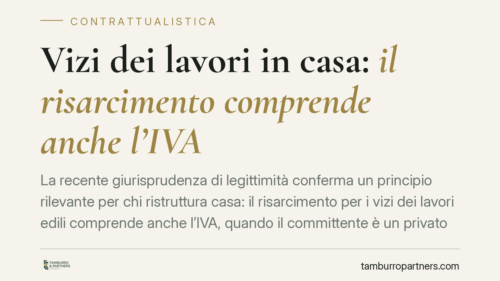

Vizi dei lavori in casa: il risarcimento comprende anche l'IVA
La recente giurisprudenza di legittimità conferma un principio rilevante per chi ristruttura casa: il risarcimento per i vizi dei lavori edili comprende anche l'IVA, quando il committente è un privato che non può recuperarla. Il diritto sorge anche se le riparazioni non sono ancora state eseguite, perché l'imposta è parte integrante del costo di ripristino.

Il principio affermato
La Corte di Cassazione, in una pronuncia in materia di appalto, ha chiarito che l'importo dovuto al committente a titolo di risarcimento per i vizi dell'opera deve includere anche l'IVA gravante sui lavori di ripristino.
La ragione è pratica prima ancora che giuridica: per il committente persona fisica che non svolge attività d'impresa, l'IVA non è un costo recuperabile. Non potendo portarla in detrazione, l'imposta rappresenta un esborso effettivo che rientra a pieno titolo nel danno subito.
Un ulteriore chiarimento riguarda il momento: il diritto al rimborso dell'IVA spetta anche se le riparazioni non sono state ancora eseguite. Si tratta infatti di risarcimento per equivalente, cioè della somma necessaria a ripristinare l'opera a regola d'arte, indipendentemente dal fatto che il committente decida di intervenire subito o più avanti.
> Nota sulla fonte: gli estremi della pronuncia diffusi in prima battuta risultano non verificabili in modo affidabile (numero e anno). Riportiamo pertanto il solo principio di diritto, coerente con l'orientamento consolidato della giurisprudenza di legittimità sul punto.
Inquadramento normativo
Il quadro di riferimento è quello del contratto di appalto. L'art. 1667 cod. civ. disciplina la garanzia per difformità e vizi dell'opera: il committente decade dalla garanzia se non denuncia i vizi entro sessanta giorni dalla scoperta, e l'azione si prescrive in due anni dalla consegna.
L'art. 1668 cod. civ. stabilisce i diritti del committente in presenza di vizi: può chiedere l'eliminazione dei difetti a spese dell'appaltatore oppure una riduzione proporzionale del prezzo. Il risarcimento del danno è dovuto in aggiunta, ma presuppone la colpa dell'appaltatore: non è quindi automatico, bensì legato a un profilo di responsabilità.
Quando i difetti sono gravi e incidono su edifici destinati a lunga durata, opera l'art. 1669 cod. civ., con termini propri: denuncia entro un anno dalla scoperta e azione da esercitare entro un anno dalla denuncia.
Sul contenuto del danno risarcibile interviene l'art. 1223 cod. civ., secondo cui il risarcimento comprende sia la perdita subita sia il mancato guadagno, purché conseguenza immediata e diretta dell'inadempimento. È proprio su questa base che l'IVA, in quanto componente reale del costo di ripristino per il privato, viene inclusa nella somma dovuta.
Implicazioni pratiche
Per il committente privato. La somma da pretendere non si ferma all'importo netto dei lavori di riparazione: comprende anche l'imposta. Nella quantificazione della richiesta, quindi, l'IVA va calcolata e documentata. Il diritto sussiste a prescindere dal fatto che l'intervento correttivo sia già stato commissionato.
Per l'impresa appaltatrice. L'esposizione economica in caso di vizi risulta più ampia di quanto talvolta stimato. Occorre considerare che l'importo eventualmente riconosciuto in sede di transazione o giudizio includerà l'IVA sui lavori di ripristino, con impatto diretto sulla valutazione del rischio contrattuale e sulle politiche di garanzia.
Resta ferma la distinzione tra risarcimento e concreta esecuzione dei lavori: il committente può ottenere la somma equivalente al costo di ripristino senza doverne dimostrare la già avvenuta esecuzione, salvo poi decidere se e quando intervenire.
Cosa fare in concreto
- Denunciare i vizi tempestivamente. Verificare quale disciplina si applica al caso concreto: 60 giorni per la garanzia ordinaria (art. 1667 c.c.), un anno per i vizi gravi degli edifici (art. 1669 c.c.). La tempestività è condizione per non perdere il diritto.
- Documentare lo stato dell'opera. Raccogliere fotografie, relazioni tecniche e preventivi di ripristino: sono la base per quantificare il danno, IVA inclusa.
- Calcolare il danno in modo completo. Nella richiesta indicare l'importo dei lavori di riparazione comprensivo dell'imposta, quando il committente non può recuperarla.
- Valutare il presupposto della colpa. Il risarcimento aggiuntivo rispetto all'eliminazione dei vizi richiede la responsabilità dell'appaltatore: è opportuno verificare la sussistenza di questo elemento.
- Non ritardare l'azione. I termini di prescrizione sono brevi; è opportuno verificare subito quale regime temporale si applica alla propria situazione.
---
*Contributo informativo a cura di Tamburro & Partners - Avv. Giuseppe Tamburro. Non costituisce parere legale.*
Ogni contratto ha il suo equilibrio.
Se vuoi una revisione delle clausole o una redazione su misura, scrivi allo studio. Ti rispondiamo entro un giorno lavorativo.